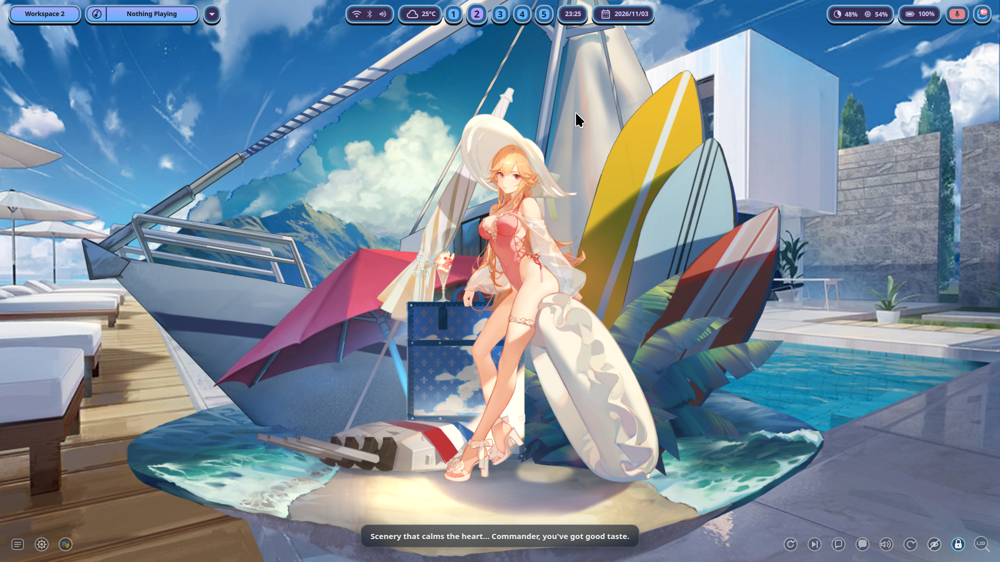

Live2D Wallpaper Daemon
Made for Wayland
Brings interactive Live2D characters directly onto your desktop wallpaper. Engineered with GTK4 multi-monitor mirroring, automatic pause-on-cover to save battery, and smooth mouse-following physics.
Real Desktop Demonstration
Recorded directly on Arch Linux running Niri Wayland compositor with Richelieu (Fleuron of the Waves) at 60 FPS.
Desktop Showcase & Settings
Live captures of the wallpaper running in harmony with the Quickshell desktop interface and system widgets.

Desktop Layer-Shell Integration
WebGL rendering seamlessly positioned behind status bars, window columns, and desktop widgets.

Integrated Model Browser
Interactive Quickshell phone setting page with live thumbnail picker, catalog download, and camera adjustment.

Control & Customization
Toggle 30/60 FPS refresh rate, gaze follow, placement lock, and sound sync with zero restarts.
Built for Daily Desktop Use
Purpose-engineered to be smooth, energy-efficient, and effortless to run in your daily rice.
Dual-Display Mirroring
Instead of spawning separate hungry web processes per monitor, GTK4 mirrors the primary WebGL canvas onto secondary outputs with zero extra CPU/GPU work.
Smart Battery Preservation
A background listener tracks workspace events. When full windows cover the wallpaper, rendering halts completely down to 0% GPU load.
Natural Eye & Head Tracking
Characters smoothly follow your mouse pointer across your monitors with natural physics dampening and breathing rhythms.
Plug & Play Multi-monitor
Automatically handles display connection and disconnection on the fly without crashing your session or losing placement.
Setup & Usage
Simple step-by-step instructions to get up and running on Arch Linux.
Install Runtime Dependencies
Available directly in standard Arch Linux packages:
sudo pacman -S --needed gtk4 gtk4-layer-shell webkitgtk-6.0 python-gobjectClone & Vendor Web Libraries
Download the repo and prepare the web runtime:
git clone https://github.com/AtelierMizumi/mizu-l2d ~/Projects/Tools/mizu-l2d
cd ~/Projects/Tools/mizu-l2d
./scripts/fetch-web-deps.shLaunch Daemon
Run directly in terminal or enable as a systemd user unit:
# Test run standalone:
python3 wall/mizu-l2d-wall.py
# Or run with systemd user session:
systemctl --user enable --now mizu-l2d-wall.service